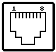

Previous
Next
TOC
Physikalische Netzstruktur
Das physikalische Kabelnetz wird in voneinander unabhängig projektier-
bare Bereiche eingeteilt: Primär-, Sekundär- und (den) Tertiärbereich.
Für die Ausstattung der Arbeitsplätze wird die einheitliche Kommunika-
tionssteckdose für Wetern Plug (RJ45 Steckverbindungen) empfohlen.
Durch Rangiermöglichkeiten an den Verteilerschränken wird das Netzan-
gebot am Arbeitsplatz individuell angepaßt und bei Bedarf erweitert
(Umzugskosten und zukünftige Installationen entfallen).
Tertiärbereich
Im Tertiärbereich werden die Kommunikationssteckdosen sternförmig
über UTP-Kabel mit dem Etagenverteiler verbunden. Für die auf der
Etage typischen Entfernungen (bis 100 Meter Länge) läßt das symme-
trische Kupferkabel hohe Bitraten zu. Der strukturierten Verkabelung
liegen die Normen ISO 11801 und EN 50173 zugrunde.
Sekundärbereich
Der Sekundärbereich ist in Gebäuden dem Steigbereich gleichzusetzen.
Die Etagenverteiler werden untereinander verbunden und ins Kommunika-
tionsnetz einbezogen. Eingesetzt werden UTP-Kabel und/oder LWL, ent-
sprechend dem Kommunikationsbedarf beziehungsweise des Budgets.
Primärbereich
Die Primärbereichsverkabelung, die physikalische Basis für ein ge-
meinsames Backbone-Netz, verbindet die einzelnen Gebäude eines Stand-
ortes untereinander. Die Entfernungen liegen hier im Bereich von eini-
gen hundert Metern bis zu einigen Kilometern, eingesetzt werden LWL
(mehrere Fasern) wegen der geringen Dämpfung, großer Bandbreite und
elektromagnetischer Unempfindlichkeit.
Der Primärbereich umfaßt einen
oder mehrere logische Backbone-Netze, eventuell Hochgeschwindigkeits-
netze wie
FDDI. Die Subnetze liegen im Sekundär- und/oder Tertiärbe-
reich. Durch Rangieren können bei Bedarf mehrere Netze parallel oder
einzelne Subnetze unabhängig voneinander betrieben werden. Die LWL/UTP
Verkabelung bietet eine Kommunikationsinfrastruktur für IEEE 802.3
(Ethernet), IEEE 802.5 (Token Ring>,
FDDI, ISDN und der klassischen
Sprachnetzwerke. Der Einsatz von Baluns ermöglicht die problemlose
Verbindung von AS/400, IBM 3270, Cheapernet, Wang-Net und anderen
Kommunikationssystemen im industriellen Bereich. Die strukturierte
Verkabelung führt zu einer wesentlichen Vereinfachung der Kabelverle-
gung. Benutzt werden nur 2 Kabeltypen: UTP, LWL und ein Steckertyp
(RJ45, bei LWL evtl. ein zusätzlicher). Die Kabel werden sternförmig
verlegt; passendes Rangieren der UTP- und LWL-Kabel im Verteiler-
schrank ermöglicht die Realisierung einer flexiblen Kommunikations-
infrastruktur innerhalb des Betriebsgeländes.
Die RJ45 Pinbelegung für die strukturierte Verkabelung

Ethernet
Pin 1: Tx+
Token Ring
Pin 3: Tx-
IEEE 802.3 10 BaseT
Pin 2: Tx-
IEEE 802.5
Pin 4: Rx+
Pin 3: Rcv+
Pin 5: Rx-
Pin 6: Rcv-
Pin 6: Tx+
weiterblättern
Kapitel IEEE 802.3 (10BaseT), Seite 3